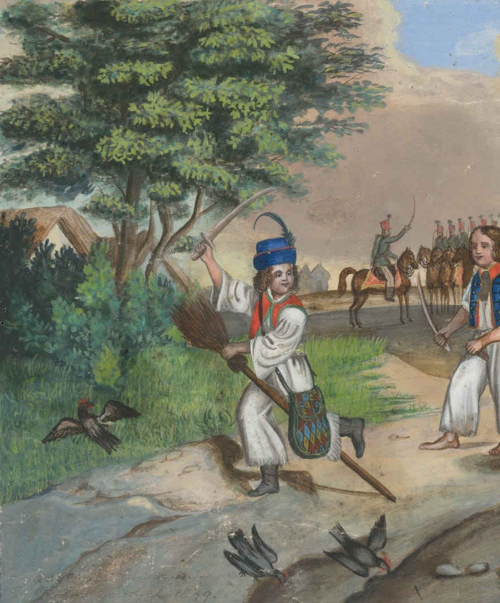

Povstanie 1848
Povstanie 1848 je interaktívny exponát pre Múzeum Slovenských Národných Rád v dome Anny Koléniovej v meste Myjava. Návštevník si tu môže vyskúšať úlohu dobrovoľníka v Slovenskom povstaní v roku 1848 - pomáhať s prípravami na boj, verbovať dobrovoľníkov, nadväzovať dimplomatické vzťahy a radiť sa s Ľudovítom Štúrom, Michalom Miloslavom Hodžom a Jozefom Miloslavom Hurbanom. Príbeh je doplnený maľbami, grafikami a fotografiami zo zbierok Slovenských galérií.
Povstanie 1848 vytvoril lab.SNG pre Slovenské národné múzeum pri príležitosti 150. výročia vzniku Slovenskej národnej rady. Pomocou príbehu, ktorý návštevník ovplyvňuje svojimi rozhodnutiami, približuje historický kontext revolučných rokov 1848 - 1849 a udalosti vedúce k boju Slovákov o samostatnosť v rámci Uhorska.
Exponát bol vytvorený pomocou online platformy Twine. Príbeh je založený na historických udalostiach a využíva primárne literárne zdroje a archívne materiály. Scenár imituje dobový štýl reči a písania.
Vytvoril lab.SNG
- Scenár: Katarína Fitková
- Vývoj: Philo van Kemenade
- Grafický dizajn: Martin Pyšný
- Produkcia: Michal Čudrnák, Lukáš Štepanovský, Gabriel Balkó
Použité diela
Zdroje výtvarných diel
- Slovenská národná galéria
- Galéria mesta Bratislavý
- Východoslovenská galéria
- Slovenské národné múzeum
-
 Stredoeurópsky maliar z 2. polovice 19. storočia
Stredoeurópsky maliar z 2. polovice 19. storočia
Lesná krajina (GMB A 1736) -
Lang, Rudolf
Podunajská krajina (GNZ M 112) -
Szilassy, Gejza
Lesnatá krajina (VSG O 134) -
Stredoeurópsky autor z 1. polovice 19. storočia
V hostinci (GMB A 3562) -
Bohúň, Peter Michal
Oravskí zemania vo väzení (SNG O 2417) -
Frey, Johann Wilhelm
Lanerov dom vo Viedni (GMB A 5896) -
Bohúň, Peter Michal
Ján Francisci ako kapitán slovenských dobrovoľníkov (SNG O 5301) -
Benka, Martin
Izba z Ratiškoviec (SNG O 6640) -
Brodszky, Alexander
Vnútro lesa so skalami (SNG O 357) -
Katzler, Vincenz
Boj (GMB C 4069)